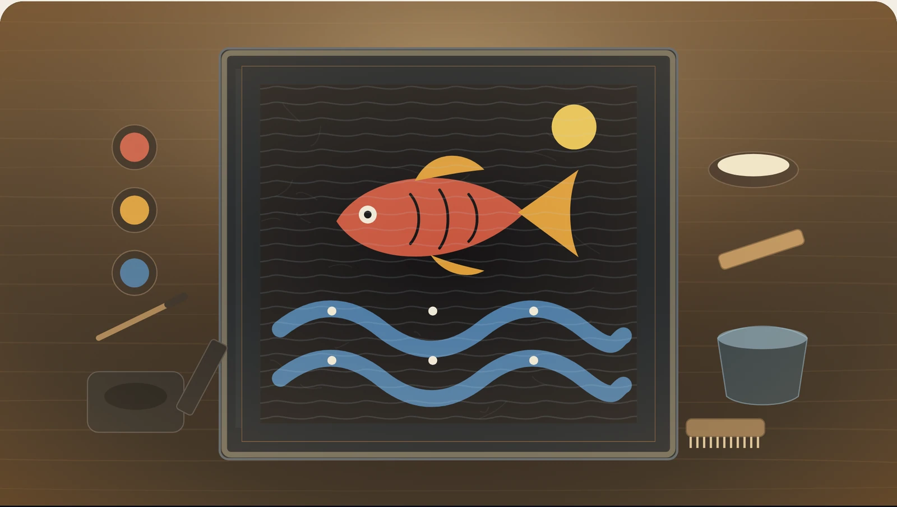
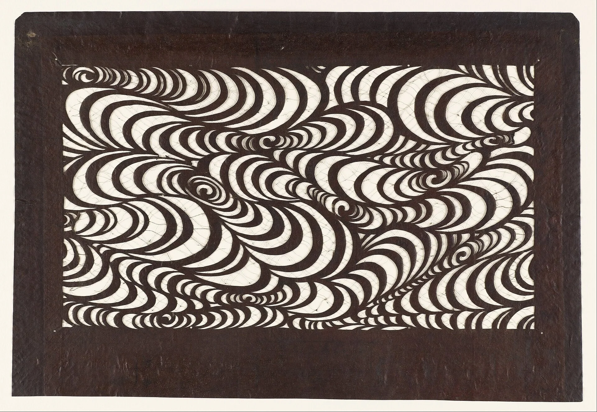
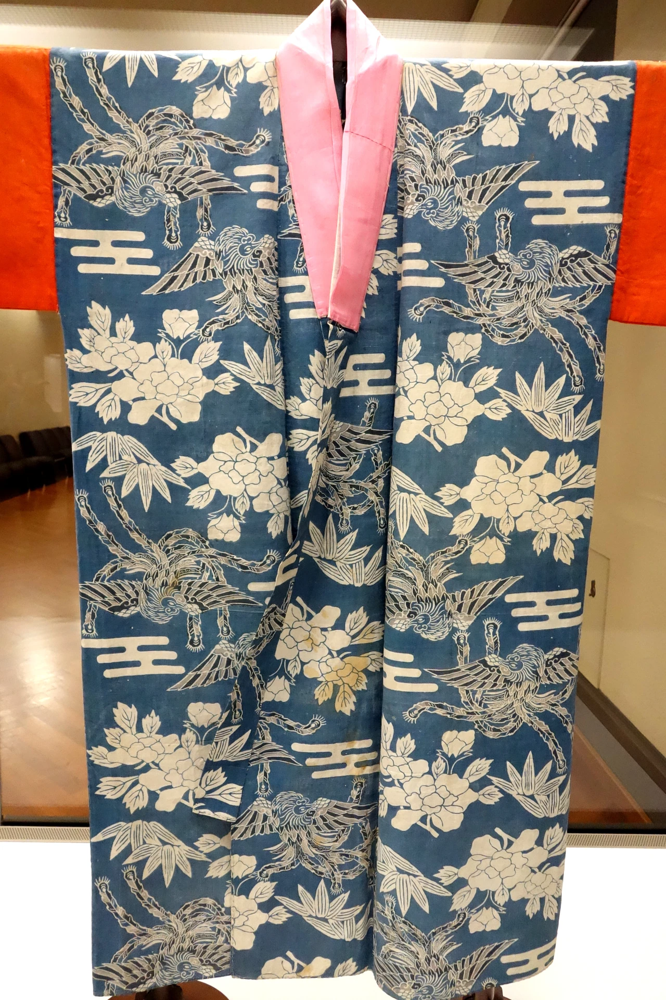

 아직 펼치지 않은 카드
아직 펼치지 않은 카드
도쿄의 염색 가게에서 옷감 물들이는 일을 배운 소년이, 자라서 성경 이야기만 찍는 판화가가 되었어요. 그는 옷감에 쓰던 종이 본(무늬대로 오려 낸 종이)과 쌀풀로 종이에 판화를 찍었어요. 1977년 미국의 한 미술 교수가 적어 둔 그의 작업 차례대로, 아래 작업대에서 판화 한 장을 찍어 보세요.
옛날 일본에 옷감을 물들이던 소년이 있었대. 어른이 되어서는 종이 본이랑 쌀풀로 성경 그림을 찍었어. 우리도 차례대로 찍어 볼까?
검수 전 시안이에요(기준서 1판). 와타나베의 판화는 저작권이 남아 있어 싣지 않았어요. 작업대 무대와 끝에 드러나는 물고기 무늬는 그의 판화가 아니라, 1977년 기록의 차례를 보여 주려고 이 안내서가 그린 그림이에요. 상상은 ‘눈 감고 상상해 보기’에만 썼어요.
와타나베 사다오(渡辺禎雄)는 1913년 도쿄에서 태어났어요. 열 살에 아버지를 여의고 학교를 일찍 그만둔 뒤, 염색 가게에 들어가 일을 배웠어요.
열일곱 살이던 1930년, 이웃에 사는 한 그리스도인 여성이 그를 교회로 이끌었어요. 그해 성탄절에 그는 세례를 받았어요. 세례는 물로 그리스도인이 되어 교회의 한 식구가 되는 예식이에요.


1930년대 끝 무렵 그는 기모노와 오비(기모노 허리띠)의 무늬를 그리고 물들이는 일을 했어요. 1937년에는 염색가 세리자와 게이스케(芹沢銈介)의 전시를 보았어요. 세리자와는 오키나와의 옷감 물들이기인 빈가타(紅型)에서, 종이 본을 대고 물들이는 법인 가타조메(型染)를 익힌 사람이에요.
몇 해 뒤 와타나베는 세리자와가 가타조메를 가르치는 모임에 들어갔어요. 두 사람은 가까운 벗으로 지냈어요.
옷감 물들이는 가게에서 일하던 소년이 있었어. 이렇게 구멍 뚫린 종이 본을 대고 옷감에 색을 입혔대.
물어보기종이 본의 구멍으로 색이 들어가면, 옷감에 어떤 무늬가 생길까?
1940년대부터 와타나베는 옷감을 물들이던 이 기법으로, 종이에 성경 이야기를 찍었어요. 룻과 나오미, 노아의 방주, 최후의 만찬 같은 이야기예요. 그는 자기 판화를 ‘종이 본으로 물들인 판화’라고 불렀어요. 1977년, 미국의 미술 교수 헬렌 메릿(Helen H. Merritt)은 그가 판화 한 장을 찍는 차례를 자세히 적었어요.
먼저 감즙(덜 익은 감을 삭힌 즙)에 적셔 물에 강해진 두꺼운 종이에, 붓과 먹으로 그림을 그리고 작고 날카로운 칼로 오려 종이 본을 만들어요. 메릿은 그가 칼로 오리면서 그림을 조금씩 다듬어 간다고 적었어요. 색을 넣은 판화는 그다음, 아래 작업대에 놓는 차례대로 찍어요.
와타나베는 자기 판화가 ‘사람들이 늘 모이는 곳’에 걸리기를 바랐어요. 우리라면 어디에 걸까요?
“내 일은 아주 쉬워요. 누구라도 할 수 있어요.”
와타나베 사다오, 헬렌 메릿이 미국 잡지 Christian Century(1977)에 쓴 글에서 · 이 안내서가 옮김
불빛, 종이 본, 물감, 쌀풀, 먹, 찬물! 차례대로 놓아 볼까? 마지막에 그림이 짠 하고 나타나.
물어보기새까만 종이를 물에 헹구면 무슨 일이 생길까?
눈 감고 상상해 보기
종이 위로 찬물이 흘러요. 뻣뻣한 솔로 문지를수록 하얀 풀이 조금씩 풀려 나가요. 새까만 먹 아래에서 붉은빛, 노란빛이 하나씩 떠올라요. 작은 방 안에 먹 냄새와 물소리가 가득해요.
눈을 감아 봐. 쏴아, 찬물이 흘러. 솔로 싹싹 문지르면, 새까만 종이에서 그림이 짠 나타나!
내 손에 익은 기술로 소중한 이야기를 표현한다면, 무엇을 만들 수 있을까요?
나는 어떤 방법으로 그림을 그리는 게 제일 좋아?
마음에 닿는 한 줄을 고르거나 직접 써 보세요. 한 줄을 남기면 이 자리의 도장이 찍혀요. 이 기기에만 저장돼요.
이야기를 보다 궁금해질 만한 것들이에요. 답을 읽거나 짧은 영화로 보세요.

아직 펼치지 않은 이야기예요. 누르면 이야기가 펼쳐지고 색이 돌아와요. 더 알고 싶으면 근거를 따라가 보세요.
다 펼치면, 다음에 오실 때 새 이야기가 찾아와요.
오늘의 뒷이야기는 여기까지예요. 다음에 오시면 새 이야기가 기다리고 있어요.
펼친 뒷이야기 · 누르면 다시 볼 수 있어요
찍는 차례 메릿(1977)은 색을 칠하고 쌀풀로 덮은 뒤 먹을 칠하고 씻어 내는 차례를 적었어요. 판화 해설가 존 피오릴로(2020)는 「기쿠(聞く)」(1960)를 예로 들어, 바탕을 붉게 칠하고 흰색·초록·노랑을 손으로 칠한 뒤 맨 마지막에 본을 대고 검은색을 붓으로 칠했다고 적어요.
세리자와에게 배운 때 1937년 전시를 보고 몇 해 뒤(피오릴로), 1941년(호놀룰루 미술관), 1940년대(메릿)로 기록마다 달라요.
세리자와가 빈가타를 배운 때 메릿은 1930년대 초 오키나와에서라고 적었어요. JR동일본이 펴낸 세리자와 연보는 1928년 박람회에서 빈가타 보자기를 보고 놀랐고, 1939년 첫 오키나와 여행 때 나하에서 배웠다고 적어요.
말씀은 뜻만 옮기고, 본문은 대한성서공회 개역개정으로 이어 드려요.
룻기 1장 16절 남편을 잃은 룻이 시어머니 나오미에게, 어머니가 가는 곳에 나도 가겠다고 말해요. 1947년 상을 받은 판화가 룻과 나오미 이야기예요.
민수기 21장 9절 모세가 놋으로 뱀을 만들어 장대 위에 달자, 뱀에게 물린 사람이 그것을 쳐다보고 살았어요. 1958년 1등을 한 「청동 뱀」이 이 이야기예요.

확인한 날 · 2026년 11월 18일 · 바뀌기 쉬운 정보라 정기적으로 다시 확인해요
그의 판화는 저작권이 남아 있어 이 카드에 싣지 않았어요. 아래 미술관과 해설 누리집에서 볼 수 있어요.
도쿄 고마바의 일본민예관은 그에게 첫 상을 준 곳이에요. 여는 날과 시간은 누리집에서 확인해 주세요.
메릿이 적은 차례(불빛, 종이 본, 물감, 쌀풀, 먹, 찬물)대로 다 놓으면 카드에 금박이 입혀져요.
둘 가운데 하나만 해도 카드가 채색돼요.
‘처음 만나는 기독교 문화’의 깊은 카드예요. 사람 얼굴이 나오는 사진은 쓰지 않았어요. 카드 단계와 남긴 글은 이 기기에만 저장돼요.
영화처럼 보기 · 약 3분
화면을 누르거나 → 키를 누르면 넘어가요. 그냥 두어도 자막이 저절로 넘어가요.